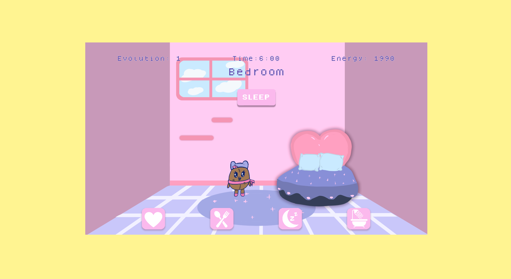

Fast Fashion Awareness Website
This is a parody website made to mock fast fashion brands. It also includes important information about the negative impact fast fashion has on our planet. This was made with html, css and javascript.
Cappugotchi Game
This is a cute game about evolving a cute little coffee bean into a delicious cappucino. In order to play you need a microphone and a webcam. This was made using javascript and p5.